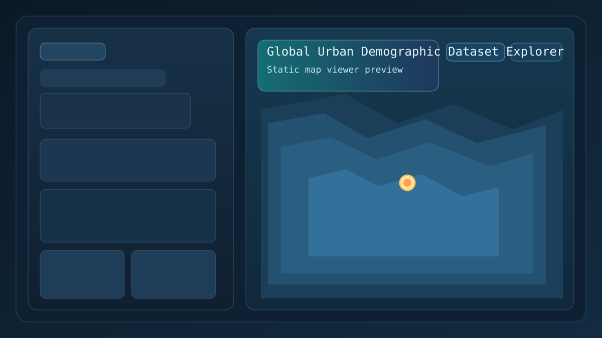
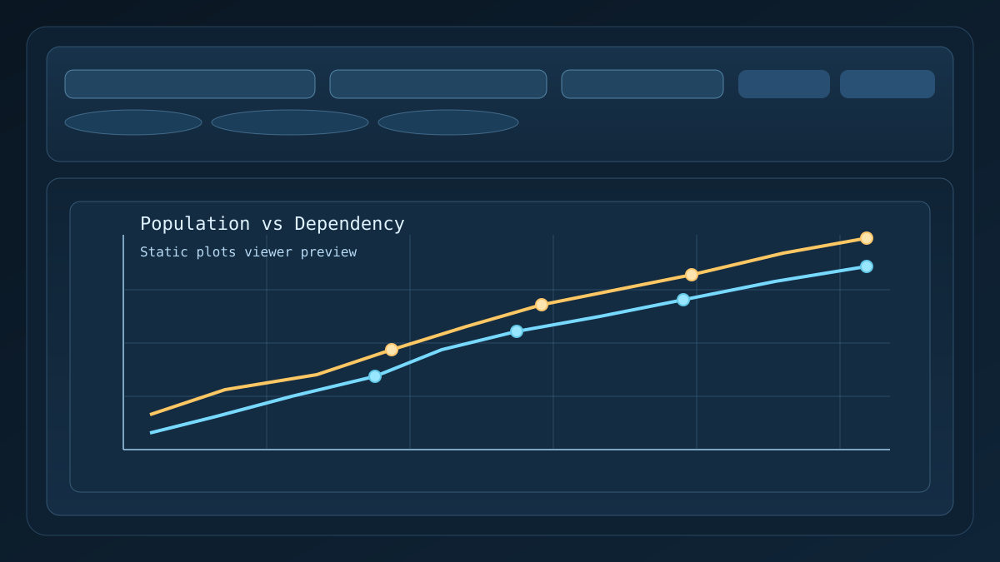

GUDD Explorer | Maps
Interactive boundary map with click-through city demographic panels and exports.

Open MapsChoose a viewer.
Interactive boundary map with click-through city demographic panels and exports.

Open MapsAnimated population versus dependency plot viewer with GIF and PNG downloads.

Open Plots